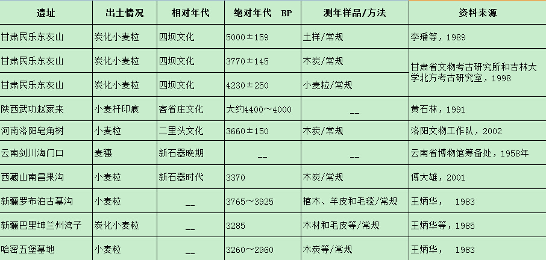
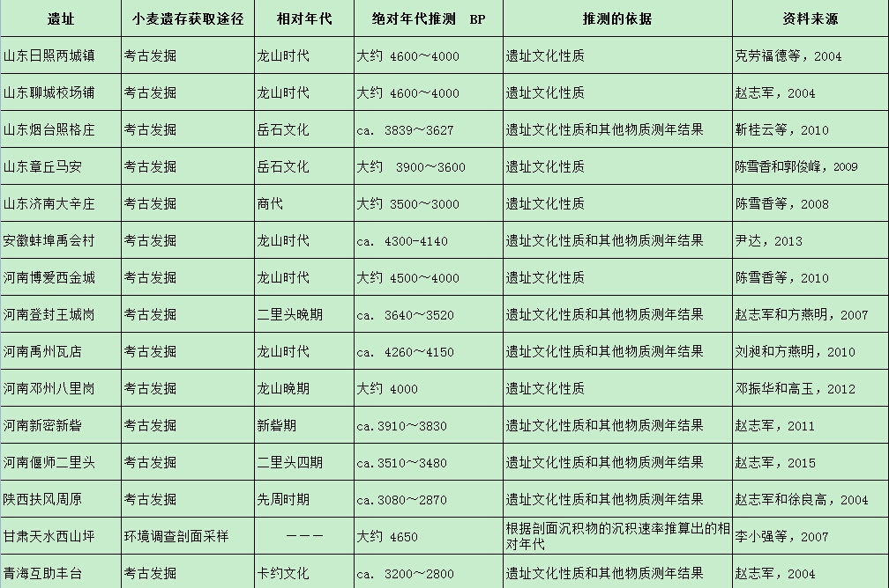
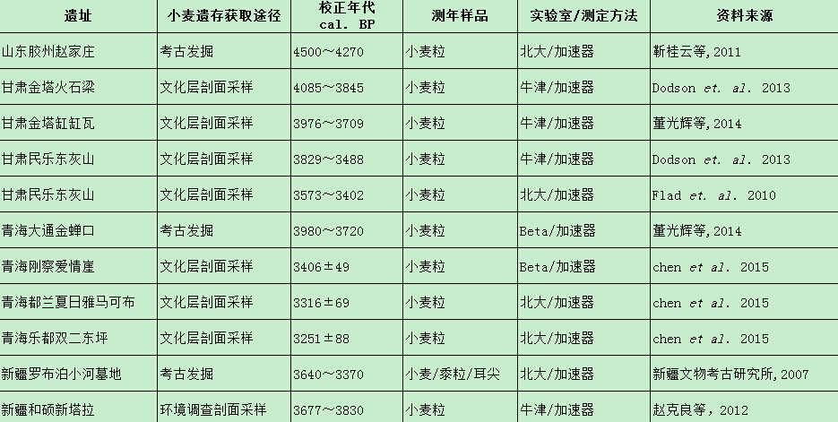
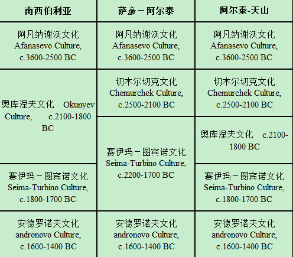

摘 要：小麦起源于西亚，后传入中国，并逐步地取代了粟和黍两种小米，成为了中国北方旱作农业的主体农作物，形成了现今中国“南稻北麦”的农业生产格局。目前已见报道的有关早期小麦遗存的考古发现多达数十例，这些新发现的考古证据显示，至迟在距今4000年以前小麦已经传入到中国境内，而且很有可能早至距今4500年。考古证据还揭示，小麦传入中国至少有两个途径，即草原通道和绿洲通道。草原通道的传播路线是：西亚－中亚－欧亚草原诸青铜文化－中国北方文化区－黄河中下游地区；绿洲通道的传播路线是：西亚－中亚－帕米尔高原－塔里木盆地南北两侧的绿洲－河西走廊－黄土高原地区。
一
世界有四个农业起源中心区，即西亚、中国、非洲北部和中南美洲，其中西亚是小麦的故乡。小麦起源于西亚的肥沃新月地带（Fertile Crescent），这个地带大体包括现今的以色列、巴勒斯坦、黎巴嫩、约旦、叙利亚、伊拉克东北部和土耳其东南部；考古发现的最早的小麦遗存出土于EPPNB（早前陶新石器时代B期）时期的考古遗址中，绝对年代在距今10500－9500年间 。最初被驯化的栽培小麦有两个品种，即一粒小麦（Triticum monococcum）和二粒小麦（T. turgidum）。大约在距今8000年前后，二粒小麦向东传播到伊朗高原北部与里海东南部之间的河谷地区，与当地自然生长的粗山羊草（Aegilops tauschii）杂交，形成了一个新的栽培品种，即现今广泛种植和食用的六倍体小麦（T. aestivum），也被称为普通小麦或面包小麦 。
栽培小麦出现之后向四周传播，并逐步成为世界几个主要古代文明的农业生产的主体农作物品种，例如两河流域的美索不达米亚古代文明、尼罗河流域的古埃及文明、印度河流域的古印度文明，以及后来的古希腊和古罗马文明等，这些古代文明都是建立在以种植小麦为主要粮食作物的农业生产基础之上的。
小麦的传播向东抵达中亚地区后就停滞了，确切地说，传播速度变得缓慢了。考古发现显示，早在距今7000年前后，小麦已经传播到了中亚地区的西南部，例如位于土库曼斯坦境内的科佩特山脉（Kopet-Dagh）北麓 ，但迟至数千年后才继续向东进入了东亚地区。小麦向东传播受阻的原因是多方面的，主要因素应该是西亚和东亚的气候特点的不同。小麦起源的西亚地区属于地中海气候（Mediterranean climate），气候特点是夏季炎热干燥、冬季阴冷湿润，主要降雨季节在冬春两季。而包括中国、朝鲜半岛和日本列岛在内的东亚地区属于季风气候（monsoon climate），气候特点是水热同季，夏季高温多雨，冬季寒冷干燥，主要降水集中在夏季。这种降水季节的差别对小麦的生长产生了很大的影响。小麦是夏收作物，冬播夏收。春季是生长时期，最需要水，但东亚地区的春季普遍缺少雨水，例如中国北方广大区域有“春雨贵如油”的说法，这种状况不利于小麦生长期中的拔节和灌浆。而夏季频繁的降雨又影响了小麦的成熟和收获。所以，如果缺乏人工灌溉，东亚地区实际上是不适合小麦的生长和种植。这应该是造成了小麦在东传过程中速度逐渐缓慢的主要原因。
然而历史事实证明，小麦终究还是继续向东传播，并进入到中国古代文明的核心区域，即黄河中下游地区，随后逐步地取代了当地本土农作物品种－粟和黍两种小米，成为了中国北方旱作农业的主体农作物，形成了现今中国“南稻北麦”的农业生产格局。由此可见，虽然小麦的起源与中国无关，但小麦是何时传入中国的、通过哪条途径传入中国的、传入中国后又是如何扩散的、对中国古代文明进程产生了那些影响？这些都是需要我们认真探讨的重要学术问题。
二
关于小麦传入中国的时间，从历史文献中能够查到一些线索。例如《左��•成公十八年》记载：“周子有兄而�o慧，不能辨菽��，故不可立”。从这个故事可以看出，早在春秋战国时期中国北方地区已经开始广泛种植小麦了，以至于当时的普通人都应该能够分得清大豆和小麦这两种农作物。不仅如此，在中国最古老的成熟文字即甲骨文中也已经出现了小麦的文字，并为探讨小麦的传入提供了一些蛛丝马迹。例如，甲骨文中的 “来”和“麦”这两个字都被诠释为麦类作物，前者一般被释为小麦，后者被释为大麦 。“来”字是个象形文字，本意应该是专指小麦，但后来却被转义为来来去去的来，因此有学者认为这就暗示了小麦外来的含义 ，但也有学者持不同的意见 。不论如何，甲骨文中出现的“来”字明确地证实，小麦至迟在距今3300年前后的殷商时期已经传入中国。
文献的记载到此为止了，如果再继续向前追溯就需要通过考古发掘获得比历史文献记载更早的资料，确切地说，绝对年代在距今3000年以前的考古实物资料。这也是本文讨论的年代界限。
考古学是以物说话的，探讨有关小麦传入的问题，最直接的考古证据当然就是古代小麦遗存。但是，小麦作为植物是有机物质，容易腐烂，很难长期保存在考古遗址文化堆积中。与其他考古出土遗物相比,小麦籽粒比较细小,肉眼难以发现,所以在考古发掘过程中使用常规的发掘方法是不易找到古代小麦遗存的。即便如此，在上个世纪的考古发掘工作中，也曾出现过有关小麦遗存的报道。其中出土有早期即距今3000年以前小麦遗存的考古遗址有：甘肃的民乐东灰山遗址 、陕西的武功赵家来村遗址 、安徽的亳县钓鱼台遗址 、云南的剑川海门口遗址 、西藏的山南昌果沟遗址 、以及新疆的罗布泊古墓沟遗址 、巴里坤兰州湾子遗址 和哈密五堡古墓 等（表一）。

表一 上世纪考古发现的早期小麦遗存
需要指出的是，这些小麦遗存的出土大多是偶然发现，而且在年代的测定上或植物种属的鉴定上，或多或少地都存在着一些疑惑和问题，并由此引发了一些争论。例如，亳县钓鱼台遗址的小麦遗存出土于一件陶鬲中，当时被认定为新石器时代的遗存，但随后这件陶鬲又被确认为是西周时期的遗物 。再如，武功赵家来村遗址发现的小麦遗存在年代上虽然没有争议（客省庄二期），但植物种属的鉴定值得怀疑。根据报道，赵家来村的小麦遗存实际是发现于墙皮草拌泥中的某种植物茎秆的印痕 ，然而，大多数谷物的茎秆即便是在新鲜状况下仅凭外观也很难进行种属鉴定的，更何况是残留在草拌泥中的印痕。
在上个世纪发现的这些小麦遗存中，影响力最大、争论也最多的当属民乐东灰山遗址出土的小麦遗存。东灰山遗址的小麦遗存最早是由李�[先生研究的，他曾于1985年和1986年两次前往东灰山遗址采集到一批炭化谷物遗存，从中鉴定出了普通小麦（Triticum aestivvum）和密穗小麦（T. compactum）两个小麦品种，并根据中国科学院地理研究所碳十四实验室对采自遗址土样（黑炭土）的测年结果，判断东灰山遗址出土小麦的年代在距今5000前后 。李�[先生是我国著名的农学家，他对东灰山遗址出土小麦遗存的植物种属鉴定是可信的。但李�[先生不是考古学家，他在东灰山遗址采集植物遗存的方法以及对出土小麦遗存的年代判断需要专业的考古学者进行核实。
1987年，甘肃省文物考古研究所和吉林大学考古系组成了联合考古队对东灰山遗址进行了正式考古发掘。发掘结果显示，东灰山遗址属于一处单纯的四坝文化遗址 。四坝文化是分布在河西走廊的一支早期青铜时代文化，年代在距今3900～3400年之间。如此，考古学者通过发掘对东灰山遗址的年代认定不同于李�[先生对东灰山出土小麦的年代判断，二者之间相差千余年。更为复杂的是，考古发掘后正式出版的报告中附有两份碳十四测年结果，一份是由国家文物局的文物保护科学技术研究所测定的具有明确采集层位（87MDTG②）的木炭样品，测年结果是距今3490±100，树轮校正年代是距今3770±145年，恰好落在了四坝文化的年代范畴内。另一份是由北京大学考古系的年代测定实验室测试的采自四坝文化层位的炭化小麦样品，测年结果是距今4230±250年（年代数据未作树轮年代校正） ，这个数据似乎又接近了李�[先生的判断。这些互相矛盾的测年数据为东灰山遗址出土小麦遗存的年代问题又罩上了一层迷雾，引发了学术争论 。
2005年，一支由中国和美国考古学者组成的联合考察队专程前往东灰山遗址，根据文化层重新采集了土壤样品并进行了浮选，从中发现了一定数量的小麦和大麦遗存。北京大学碳十四实验室从浮选结果中选择了10余份系列的炭化麦粒样品，应用加速器质谱测年方法对这些出土炭化麦粒直接进行了测年 ，绝大多数小麦样品的测年结果都落在了距今3600～3400年之间。近几年，由中国和澳大利亚的环境学者合作对东灰山遗址出土小麦再次进行了采样和年代测定 ，校正年代为3829~3488 cal. BP※。这些新的年代数据无可辩驳地证实了，东灰山遗址的文化堆积及其包含的小麦遗存应该属于四坝文化时期，绝对年代在距今3600年前后。由此，困扰学术界数十年的一桩疑案终于得到解决。
三
浮选法是植物考古学的田野工作方法之一，是通过考古发掘获取古代植物遗存的最为有效的手段。本世纪以来，浮选法在中国得到了大力推广和普及，彻底解决了在考古发掘过程中难以发现和获取古代植物遗存的问题。截至目前为止，开展过浮选工作的考古遗址已经多达数百处，从中获得了数量惊人的炭化植物遗存，为中国考古学的研究提供了一大批珍贵的古代植物遗存资料 。通过浮选获得的植物遗存中也包括了早期古代小麦遗存，这些通过浮选法获取的古代小麦新资料，为探讨小麦传入中国的问题提供了新的证据 。
根据不完全统计，自本世纪以来正式发表或报道的有关早期小麦遗存的发现已经多达数十例。与上个世纪的发现有所不同，本世纪新发现的小麦遗存具有三个显著特点：其一，这些早期小麦遗存大多数不再是偶然的发现，而是通过考古发掘或田野调查，有目的地采集土样进行浮选或筛选获得的结果。其二，获取并研究早期小麦遗存不再是考古学的专利，许多地学或生物学的学者也积极地参与这项研究，并取得了显著成果。其三，由于碳十四测年技术的不断进步，特别是加速器质谱计（AMS）测年方法的完善，使得一粒小麦粒就足以作为测年样品，再加之我国经济持续发展带来的科研经费的充足，许多新发现的早期小麦遗存都被直接送交国内外的测年实验室对小麦粒本身进行年代测定，测年数据相对比较准确。
本世纪新发现的早期小麦遗存有两个不同的获取途径，一类是通过正式考古发掘从考古遗址文化堆积中获得的，这些考古出土的小麦遗存一般都具备明确的考古学文化层位，但大多缺乏对出土小麦籽粒的直接测年，小麦的相对年代多是根据考古遗址的文化性质判断的、或根据同出的其他物质样品如木炭、兽骨、皮毛甚至土样（全样）的年代测定结果推测的。另一类是通过环境考察或考古调查从剖面沉积物或文化堆积物中获得的，这些调查发现的小麦遗存虽然考古学文化背景不是很明确，但大多数都拥有可靠的测年数据，即对出土小麦籽粒直接进行AMS年代测定获得的年代数据。
从表二的统计可以看出，仅有相对年代的早期小麦遗存中，除了天水西山坪的之外，其他都是通过正式考古发掘获得的。根据考古学文化分期判断其相对年代，最早的属于龙山时代，大约在距今4600～4000年之间，另外还有属于二里头文化时期的，年代大约在距今4000～3500年之间。根据表三的统计，具有直接年代测定数据的早期小麦遗存中既有通过考古发掘获得的，也有通过调查在剖面采样获得的，其中以兰州大学资源环境学院的成果最为突出 。在直接使用出土小麦籽粒作为测年样品的AMS测年结果中，除了胶州赵家庄遗址的之外，其他出土小麦的测年数据都在距今4000年以内。在这两组资料中，天水西山坪和胶州赵家庄的情况比较特殊，需要做进一步分析。

表二 仅有相对年代的早期小麦遗存

表三 具有直接年代测定数据的早期小麦遗存
天水西山坪小麦遗存虽然是通过环境考察从沉积剖面中获得的，但却并没有对出土小麦籽粒直接进行AMS年代测定，小麦的年代是推测的相对年代。根据原报告 描述：样品采自一个厚约650cm的沉积剖面，“以10～15cm层厚采集约80 kg重样品20个（约80/样品），采用筛析浮选法提取各种考古遗存”（原文第674页）。“小麦在剖面上部的8个样品中被检出，最早出现的年代为约4650 cal. a BP”（原文第675页）。由于这个年代比较早，报告发表后曾引起学术界关注，国内外许多相关论文引用该资料作为中国最早的小麦遗存进行讨论。但问题是，4650 cal a BP这个年代数据从何而来？其准确性或可信度究竟有多大？原报告通过表格给出了8份碳十四测年结果（原文第675页的表一），其中并没有4650 cal a BP这个数据；8份样品的测年材料以炭屑为主（6份样品），另外还包括了水稻粒和粟粒（各一份样品），但却没有小麦粒。这清楚地说明，该研究实际并没有对出土小麦粒直接进行AMS年代测定，西山坪小麦的年代应该是通过出土层位的年代推测的。那么小麦究竟出土于那个层位？该层位的年代又是根据什么判断的？报告中的8份测年数据对应的都是沉积剖面的层位深度（cm），但文中却没有给出小麦的出土层位深度，仅提到小麦是发现于“上部8个样品”，所以无法判断。唯一可参考的是报告中的花粉图谱中根据沉积速率计算出的相对年代（原文第675页的图一），其中4600与4500这两个相对年代之间对应的层位深度是200cm，大体相当于出土有小麦的“上部8个样品”的位置。据此判断，西山坪出土小麦遗存的年代应该是根据剖面沉积速率计算出的年代所对应的沉积剖面深度推测而成的。不难看出，用这种方法推测出的相对年代可信度不高，仅可用作参考资料，不足以作为中国最早的小麦遗存进行讨论。
与之相反的是，胶州赵家庄遗址出土的小麦遗存是通过考古发掘获得的，而且还拥有直接年代测定数据。根据原报告 介绍：赵家庄遗址是一处史前聚落遗址，包括了大汶口、龙山和东周时期的文化堆积，伴随2005年的考古发掘过程开展了浮选工作，浮选出土了丰富的炭化植物遗存，从中发现了小麦遗存。发掘者将出土于龙山时代灰坑（H339）的小麦粒送交北京大学碳十四实验室直接进行了AMS年代测定，测试结果为距今3905±50 BP，校正年代为2500BC~2270 BC，即4450～4220 BP。由此看出，赵家庄遗址出土小麦遗存既有明确考古学文化背景又有准确测年数据，可信度高，研究价值大。
总之，综合分析表一至表三中所列的30余处考古遗址出土早期小麦遗存的年代信息，我们可以得出这样的结论，至迟在距今4000年以前，小麦已经传入到中国境内，并且广泛地分布在中国北方地区以及西南地区。根据山东胶州赵家庄遗址出土小麦遗存的年代判断，小麦传入中国的时间有可能早到距今4500年，由于这个年代目前仍然是孤证，最终的定论还需要更多的考古资料支持。
四
如上所述，在中国出土有早期即距今3000年以前的小麦遗存的考古遗址已经多达30余处，这些考古遗址集中分布在西起天山东缘、东至山东半岛的一条绵延数千公里的带状地带上，这条带状地带大体位于北纬34°～46°之间（图一）。根据生态环境的特点以及考古学文化区域类型的划分，这条带状地带属于三个考古学文化区域，从东向西分别是海岱地区、中原地区和西北地区。
海岱地区是一个考古学文化区域概念，专指新石器时代大汶口文化和海岱龙山文化以及青铜时代岳石文化的分布区域，主要包括现今的山东省以及安徽省和江苏省的北部 。在海岱地区出土早期小麦遗存的有：山东的胶州赵家庄、日照两城镇 、聊城校场铺 、烟台照格庄 、章丘马安 、济南大辛庄 等考古遗址，以及安徽的蚌埠禹会村遗址 。胶州赵家庄出土小麦遗存的重要性前面已经提及，两城镇、校场铺和禹会村三处遗址的发现也值得关注，因为在这三处遗址中都出土了属于龙山时代的炭化小麦遗存，可惜目前尚没有见到发表的直接年代测定数据。
中原地区是华夏文明形成的核心区域，特指新石器时代中原龙山文化以及青铜时代二里头文化的分布区域，大体包括现今河南省以及山西省和河北省的南部。近些年在中原地区浮选出土了早期小麦遗存的有：河南的登封王城岗 、博爱西金城 、禹州瓦店 、邓州八里岗 、新密新砦 、偃师二里头 等一系列考古遗址 。上个世纪末在洛阳皂角树遗址也曾浮选出土过早期小麦遗存 。在中原地区值得关注的是西金城遗址、瓦店遗址和八里岗遗址，这三处遗址都出土了属于龙山时代的炭化小麦遗存，其中瓦店遗址出土的小麦遗存被送交碳十四实验室进行了直接年代测试，但测年数据不理想，明显晚于龙山时代，其原因有待于进一步的验证和分析。
作为一个考古学文化区域概念，西北地区涉及的地域范围广泛，地理单元复杂，大体涵盖了黄河上游地区、河西走廊和新疆的大部分区域。在西北地区发现的早期小麦遗存主要是通过环境考察或考古调查获得的，但大多数具有直接年代测定数据。出土早期小麦的遗址集中分布在三个区域，即青海东部、甘肃河西走廊和新疆东部，绝对年代主要集中在距今4000～3500年之间。其中值得关注的有青海大通金蝉口遗址 ，甘肃金塔火石梁遗址22和金塔缸缸瓦遗址42，这三处遗址中出土的炭化小麦遗存的直接年代测定数据都达到了或接近距今4000年，即除了胶州赵家庄之外最早的绝对年代数据。
小麦是自西亚通过中亚传入中国的，所以西北地区似乎应该与小麦传入中国的路线或途径关系最为密切。与之相呼应的是，在历史时期，特别是秦汉以降，东西方文化交流的主干道是丝绸之路，而位于西北地区的河西走廊是丝绸之路的必经之道。再考虑到这一地区也是目前早期小麦遗存出土比较集中的区域，所以很容易让人联想到小麦是沿着丝绸之路这条通道传入中国的，即自中亚地区出发，跨越新疆塔里木盆地南北两侧的绿洲通道，穿过河西走廊，通过关中平原，进入中原地区，最终到达海岱地区。
但是，根据出土早期小麦遗存的考古遗址的地域分布规律，看不出一个由西向东的传播模式，因为在西北地区、中原地区和海岱地区都发现有距今4000年前后的早期小麦遗存，不仅如此，迄今为止所发现的可信度最高的年代最早的小麦遗存出土于山东胶州赵家庄遗址，这个遗址恰恰位于整个带状地带的最东端－山东半岛上。所以，小麦是否确实是沿着丝绸之路由西向东逐步传入中国的，值得重新考虑。
事实上，就古代东西方文化的相互交流而言，丝绸之路并不是唯一的通道，在不同的时期还存在着其他路线，例如海上丝绸之路、南丝绸之路、以及“欧亚草原通道”。所谓欧亚草原通道是指以欧亚大陆草原为主线的一条横贯东西的古代通道，这条通道东起东北亚的大兴安岭西麓，西至欧洲中部的科尔巴阡山脉，途径蒙古高原、南西伯利亚、中亚和西亚的北部，直达欧洲中部。欧亚草原通道的主体是平坦广阔的草原，中途没有难以克服的自然障碍，所以成为了连接东西方文化的天然廊道。
前面提到，早在距今7000年前后，小麦已经传播到了中亚地区，停滞了一段时期，然后继续向东传播进入包括中国在内的东亚地区，因此，小麦传入中国的起点实际应该是中亚地区。与中亚地区相关的是欧亚草原的东部，包括南西伯利亚地区、萨彦－阿尔泰－天山地区和蒙古高原地区。考古发现证实，在距今5600～3400年间，欧亚草原东部广泛分布着几个早期青铜文化，例如阿凡纳谢沃文化、奥库涅夫文化、切木尔切克文化、赛伊玛－图宾诺文化、安德罗诺沃文化等 。这些散布在辽阔草原上的早期青铜文化虽然不一定都存在着相互承续的关系，但却拥有许多共同的文化特征，例如，以动物纹青铜饰件和青铜短剑为代表的早期青铜冶炼和制作技术，以畜牧和农耕相辅相成的混合类型经济生产和生活方式，等等。这些相同的文化特征说明，在欧亚草原上的早期青铜文化之间历来存在着密切的联系和交流，而这种联系和交流就成为了搭建在欧亚草原上的文化传播的桥梁或通道，从而保证了古代东西方文化相互交流的通畅。

表四 中亚草原考古文化一览表
大约在同一个时期，即距今5000～3000年间，在中国北方以燕山南北、长城地带为重心分布着一个比较特殊的考古学文化群体－北方文化区 ，也被称作北方文化带 ，或北方区带（Northern Zone） 。北方文化区的分布范围在不同时期有所增减，但基本上是沿着长城一线、呈东北至西南的狭长地带分布，包括燕山南北地区、晋北和岱海/黄旗海地区、陕北和河套地区。需要强调的是，北方文化区的分布范围恰好处在中国北方由半干旱区向干旱区过渡的生态环境敏感地带，这一地区亦农亦牧，被称为农牧交错带。换句话说，考古学上的北方文化区与农业区划上的农牧交错带恰好重合。
由于被夹在草原青铜文化与黄河中下游农耕文化之间，北方文化区除了自身特有的文化特征外，如蛇纹鬲（西部）、之字纹陶器（东部）等，同时还拥有草原早期青铜文化的特征，如青铜短剑、动物纹青铜饰件、喇叭口形耳杯等，以及黄河中下游古代文化的特征，如彩陶、绳纹罐等。
林�V先生曾提出，欧亚草原早期青铜文化中的许多特征性青铜器，是先传播到了中国北方文化区，然后再通过北方文化区传播到了中原地区，例如，殷墟出土的具有典型北方青铜文化特征的青铜短剑、管銎战斧、弓形器等，其源头都可以追溯到欧亚草原青铜文化 。由此可见，在欧亚草原早期青铜文化与黄河中下游地区古代文化之间的文化交流过程中，北方文化区扮演了重要的媒介作用。黄河中下游地区古代文化是通过北方文化区接触到欧亚草原早期青铜文化，而欧亚草原早期青铜文化也通过北方文化区接触到黄河中下游地区古代文化。
综上所述我们认为，小麦传入中国的途径最有可能就是通过欧亚草原通道：大约在距今7000年前后，小麦由西亚传入到中亚，随后在当地逐步扩散，成为中亚地区河谷地带早期农耕生产的主要农作物品种；大约在距今5000年前后，小麦被分布在欧亚草原东部地区的早期青铜文化所接受，这些青铜文化是以畜牧和农耕混合生业模式为特点，小麦成为其种植的农作物品种之一；由于欧亚草原各个早期青铜文化之间的密切接触，小麦迅速由西向东传播，通过萨彦－阿尔泰－天山地区到达蒙古高原地区，被分布在蒙古高原南缘的北方文化区所接收；由于北方文化区与黄河中下游古代文化之间的联系是南北向的，小麦的传播方向出现了一个转折，通过多条南北向的河谷通道向南传播到了黄河中下游地区，例如滦河河谷、桑干河/永定河河谷、河套两端的黄河河谷等。需要说明的是，这条传播路线是文化因素的接力传递，与人群的迁徙应该无关。
当然，早期东西方文化的交流是多种多样的，小麦传入中国的路线不应该仅限于欧亚草原通道这一条途径。前面提到，在甘肃河西走廊发现了多处距今4000年前后的小麦遗存，例如金塔火石梁遗址和缸缸瓦遗址出土的小麦遗存，说明出现在西北地区的早期小麦与出现在黄河中下游地区的是同步的。这样，就存在另外一种可能性，即传入西北地区的小麦与传入黄河中下游地区的小麦走的是不同的传播路线。西北地区早期小麦的传入有可能是通过绿洲通道：小麦自中亚出发，向西越过帕米尔高原进入塔里木盆地，沿着塔克拉玛干沙漠南北两侧的绿洲通道向西传播，穿越河西走廊，进入黄土高原地区。由于河西走廊内也是绿洲与戈壁相间，这条传播路线可称之为绿洲通道，到了历史时期就成为了著名的丝绸之路。
五
本世纪以来，由于浮选法的普及，中国考古获得了异常丰富的古代植物遗存，其中包括大量的小麦遗存。根据统计，出土有距今3000年以前的早期小麦遗存的考古遗址已经多达30余处，其中有些小麦遗存被直接进行了测年，即采用AMS测年技术对出土小麦粒本身进行了年代测定，为探讨小麦传入中国的时间提供了相对可靠的年代数据。根据对出土早期小麦遗存的综合分析，可以得出结论：至迟在距今4000年以前，小麦已经传入到中国境内。
小麦传入中国的路线应该是多样的。通过对出土早期小麦遗存的考古遗址分布状况的分析发现，黄河中下游地区出土的早期小麦与西北地区的可能来自不同的途径。前者来自欧亚草原通道，后者来自绿洲通道。欧亚草原通道的传播路线是：小麦由中亚向北传入分布在欧亚草原东部地区的早期青铜文化，借助这些草原青铜文化之间的密切联系由西向东传播，到达蒙古高原后被中国北方文化区所接收，然后通过南北向的河谷通道由北向南传播到了黄河中下游地区。绿洲通道的传播路线是：小麦由中亚向东越过帕米尔高原进入塔里木盆地，沿着塔克拉玛干沙漠南北两侧的绿洲通道逐步向东传播，然后穿越河西走廊进入黄土高原地区。
当然，这些传播路线和传播方式仅是我们提出的假设，现有的考古资料仍然不足以做出结论，例如在中国北方文化区和帕米尔高原东麓都还没有发现早期小麦遗存，需要今后投入大量的考古工作特别是植物考古工作弥补这方面的空白。
（作者：赵志军 中国社会科学院考古研究所 原文刊于：《南方文物》2015年第3期。本文经作者授权转载）